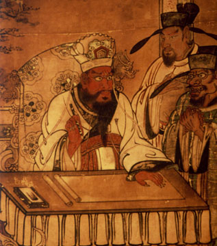
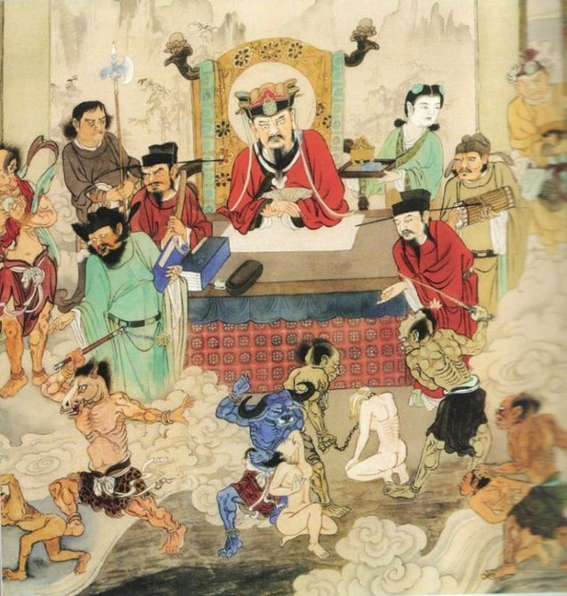
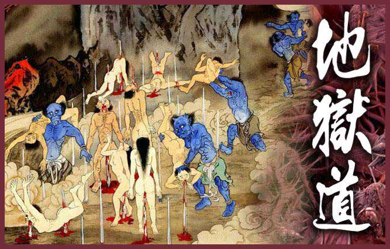

Introduction of Japanese Buddhism
Buddhism was introduced to ancient Japan in about the middle of the sixth century CE. The religion originated from a small order in India and later spread as a larger predominant belief system throughout India before spreading its way to China and then Japan in about the middle of the sixth century CE. During the latter half of the seventh century, Buddhism also known as Hakuhō Buddhism, rapidly spread across a variety of social classes and geographical regions throughout ancient Japan. At this time, Buddhism was being promoted by powerful clans and common people and thus, many Buddhist temples were built and established Buddhism in terms of “state Buddhism.” The nation adopted policies, structures and official rituals that actively promoted Buddhism due to the imperial line attached importance to the faith.
However, when Buddhism was first introduced in ancient Japan, there was conflict between Buddhism and the already existing kami beliefs and practices. Eventually, supporters of Buddhism managed to convince the people the importance of Buddhist values. Thereafter, there was a gradual merging of Buddhism and local religious culture, also known as shinbutsu shūgō or amalgamation of kami and buddhas, that began around the middle of the eight century. There are theories that the phenomena was influenced by Chinese Buddhism as the same ideas in ancient Japan existed in Chinese texts as well.
Japanese Buddhist Afterlife
Early Japanese Buddhism guaranteed a realm beyond both life and death, an idealized extension of the world. This thinking transformed previous thoughts that death was the most unfortunate event. The arrival of Buddhism brought in alternative views of death due to the belief of birth in the Pure Land that comes only after maintaining right mindfulness at the time of death. The quality of the afterlife depended on the individual’s own deeds during their lifetime in the mortal world. There is also a lingering uncertainty regarding whether the death was of right mindfulness. This pursuit of Pure Land after death became an overarching theme in Japanese Buddhism that brought a new dimension to the understanding of life and death. According to Genshin, an influential Japanese Buddhist monk during the tenth and eleventh century, there are Six Paths, rokudō, or realms of transmigration in the universe. Peace of mind is only possible after transcending the Six Paths and achieving birth in the Pure Land.
Six Paths (Rokudō)
The Six Paths are: the realm of hell, the realm of hungry ghosts, the realm of animals, the realm of fighting spirits (asura), the realm of humans and the realm of heavenly beings. After death, the soul enters Meido, the japanese underworld, where the soul travels seven days to get judged in a series of trials. The souls get judged based on how many lives they have killed, whether they stole or lied, whether they committed sins of lust and sexuality before getting placed into one of the six realms of transmigration. Those reborn as famished ghosts have small skull-like heads and bloated bodies that haunt burial grounds to search for anything that can quell their hunger. Souls that were ill-tempered in their previous lives will be reborn as fighting spirits and constantly wage battles against one another. The realm of humans is characterized by impurity due to the humans’ fragile constitution against many elements that can cause harm to the body. The human body is susceptible to countless diseases and the human soul will eventually go back into the cycle to death and life. Rebirth into the heavenly realm means that the soul will lead a blissful life as a deity due to the good deeds that were accumulated in previous lives, but the good karma can be depleted and their life will approach death again. Among one of the Six Paths is the worst realm of hell or jigoku where souls, who have accumulated bad deeds, spend their punishment in. If they were assigned to go to jigoku, more trials are done to determine what punishments are given.
Buddhist Concept of Hell (Jigoku)
There are eight great hells where each specialize in different forms of punishments. The forms of punishments get more gruesome and the duration gets longer as the chambers descend in level.
| Type of Hell | Description |
|---|---|
| Hell of Revival (Tōkatsu jigoku) |
|
| Hell of Black Threads (Kokujō jigoku) |
|
| Hell of Crushing (Shugō jigoku) |
|
| Hell of Wailing (Kyōkan jigoku) |
|
| Hell of Great Wailing (Daikyōkan jigoku) |
|
| Hell of Scorching Heat (Shōnetsu jigoku) |
|
| Hell of Great Scorching Heat (Daishōnetsu jigoku) |
|
| Unremitting Hell (Muken jigoku) |
|
Notable Monsters
Great King Enma
Enma is also known as the Lord of Hell as he oversees the judgement of the dead and punishments in hell. Enma originated from the Hindu god Yama that judged the dead and oversaw Naraka.


Oni
Onis are servants of the Great King Enma in hell. They are large and ogreish and often depicted with blue or red skin, horns and wild hair. They crush sinners with their iron clubs and carry out other horrifying punishments.

Citations:
- Andrews, A. (1977). World Rejection and Pure Land Buddhism in Japan. Japanese Journal of Religious Studies,4(4), 251-266. Retrieved December 2, 2020, from http://www.jstor.org/stable/30233147
- Park, Y., & Stone, J. (2017). Japanese Journal of Religious Studies, 44(2), 333-337. Retrieved December 1, 2020, from http://www.jstor.org/stable/90017703
- Rhodes, R. (2000). Imagining Hell: Genshin's Vision of the Buddhist Hells as found in the "Ōjōyōshū". The Eastern Buddhist, 32(1), new series, 22-55. Retrieved December 2, 2020, from http://www.jstor.org/stable/44362242
- The Essentials of Pure Land Rebirth. (2012). In Gardiner E. (Ed.), Buddhist Hell: Visions,Tours and Descriptions of the Infernal Otherworld (pp. 59-80). NEW YORK: Italica Press. Retrieved December 2, 2020, from http://www.jstor.org/stable/j.ctt1t88tfk.16
- Yoshida, K., & 吉田一彥. (2003). Revisioning Religion in Ancient Japan. Japanese Journal of Religious Studies,30(1/2), 1-26. Retrieved December 1, 2020, from http://www.jstor.org/stable/30234476
- [Oni in Jigokudo, the Realm of Hell]. (2017) https://gokurakuparadies.blogspot.com/2017/04/jigoku-hell-demons-devils.html
- [The Great King Enma depicted in a wall scroll from Azuchi-Momoyama period found in Nara,Japan] https://commons.wikimedia.org/wiki/File:Enma.jpg#/media/File:Enma.jpg